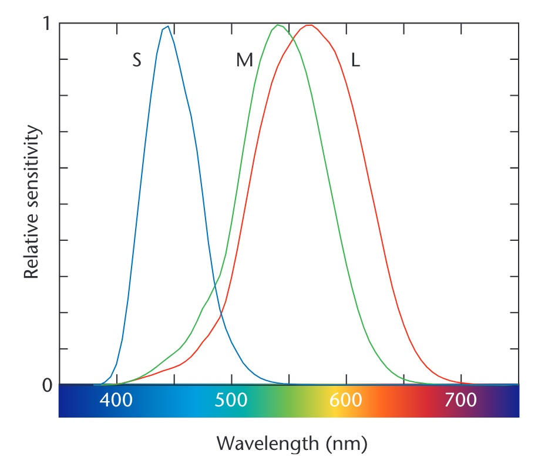
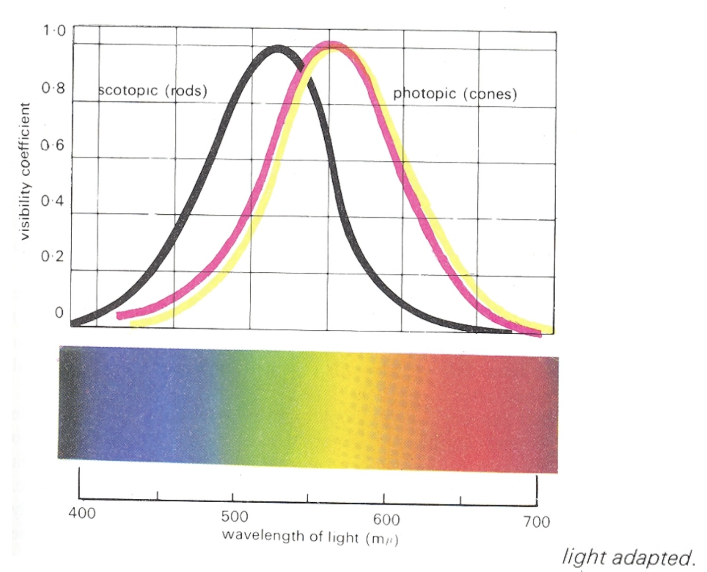

Color Theory and D3 Scales
CS-GY 6313 - Fall 2025
NYU Tandon School of Engineering
2025-10-03
Color Theory and D3 Scales
Today’s Journey
Biology/Physics → Perception Theory → Design Principles → D3 Implementation → Best Practices
Part 1: Color Theory
- Physics and physiology of color
- How humans perceive color
- Color spaces and models
- Perceptual principles
Part 2: D3 Implementation
- Color scales in D3
- Sequential, diverging, categorical
- Interpolation methods
- Accessibility and best practices
Color in Nature

Vasas et al, PLOS Biology, 2024
Image from PLOS Biology
The Visible Spectrum

Humans perceive wavelengths from approximately 390-700nm
Gregory, R.L. (1997). Eye and Brain: The Psychology of Seeing (5th ed.). Princeton University Press.
Properties of Light
Visible range: 390-700nm
Luminance has huge dynamic range:
- 0.00003 — Moonless overcast night sky
- 30 — Sky on overcast day
- 3,000 — Sky on clear day
- 16,000 — Snowy ground in full sunlight
Colors result from spectral curves:
- Dominant wavelength → Hue
- Brightness → Lightness
- Purity → Saturation
Physiology of the Eye

Light passes through cornea, pupil, lens, and reaches the retina
Gregory, R.L. (1997). Eye and Brain: The Psychology of Seeing (5th ed.). Princeton University Press.
The Retina Structure

Multiple layers of cells process visual information before sending to brain
Gregory, R.L. (1997). Eye and Brain: The Psychology of Seeing (5th ed.). Princeton University Press.
Photoreceptors: Rods and Cones
Rods
- Active at low light levels (scotopic vision)
- Only one wavelength-sensitivity function
- ~120 million in human eye
Cones
- Active at normal light levels (photopic vision)
- Three types with different peak sensitivities
- ~6 million in human eye
- Concentrated in fovea
Cone Sensitivity Curves
Three types of cones: S (short/blue), M (medium/green), L (long/red)
Stone, M. (2005). Representing Color as Three Numbers. IEEE Computer Graphics and Applications, 25(4), 78-85.
Density of Cones Across Retina
Highest density in fovea (center of vision)
Gregory, R.L. (1997). Eye and Brain: The Psychology of Seeing (5th ed.). Princeton University Press.
Rods vs. Cones Sensitivity
Rods more sensitive in low light; cones provide color vision
Gregory, R.L. (1997). Eye and Brain: The Psychology of Seeing (5th ed.). Princeton University Press.
How We Perceive Color

Color perception results from brain’s interpretation of cone responses
Stone, M. (2005). Representing Color as Three Numbers. IEEE Computer Graphics and Applications, 25(4), 78-85.
Color Matching Experiments

Foundation of color theory: any color can be matched with three primaries
Stone, M. (2005). Representing Color as Three Numbers. IEEE Computer Graphics and Applications, 25(4), 78-85.
Color Models for Visualization
Trichromacy
Humans perceive colors through three channels
Most useful color description for visualization:
- Hue: What color (red, blue, green…)
- Saturation: Purity of color
- Luminance/Lightness: Brightness
Just Noticeable Difference (JND)
The smallest detectable difference in a stimulus
For Color:
- Luminance:
~1-2%change detectable - Hue: Varies by wavelength (most sensitive in blue-green)
- Saturation:
~5-10%change needed
Implications for Visualization:
- Need sufficient steps between colors in a scale
- Can’t encode too many distinct values
- Background affects perception (simultaneous contrast)
Ware, C. (2012). Information Visualization: Perception for Design (3rd ed.). Morgan Kaufmann. Chapter 4.
How Do We Use Color in Visualization?
Two primary purposes:
1. Quantify
Show numerical values
2. Label
Distinguish categories
Color to Quantify

Mapping numerical values to color intensity or hue
Color to Label

Using distinct colors to represent different categories
Quantitative Color Scales
Desired Properties:
- Uniformity: Value difference = Perceived difference
- Discriminability: As many distinct values as possible
Challenge:
Human perception is non-linear!
Single Hue Sequential Scales
Best for quantitative data with natural ordering
Key Insight: The luminance (L*) channel decreases monotonically from light to dark, creating the perception of ordered values
Categorical Color Scales
For nominal/categorical data without inherent order

Design Goals:
- Uniform saliency: Nothing stands out unintentionally
- Maximum discriminability: Each category clearly distinct
Categorical Scale Limits
How many distinct colors can we use effectively?
Research suggests: 5-10 distinct categories maximum
Beyond this limit:
- Colors become confusable
- Need additional encoding (shape, pattern)
- Consider grouping categories
Healey, C.G. (1996). Choosing effective colours for data visualization. IEEE Visualization ’96, pp. 263-270.
Diverging Color Scales
For data with meaningful midpoint (zero, average, neutral)
 Sequential scale obscures the critical 50% threshold
Sequential scale obscures the critical 50% threshold
 Diverging scale clearly shows above/below threshold
Diverging scale clearly shows above/below threshold
Data from County Level Election Results
Color Context Effects
Simultaneous Contrast
The same color appears different depending on surrounding colors
Key Effects:
- Colors appear lighter on dark backgrounds
- Colors appear more saturated next to gray
- Complementary colors enhance each other
Design Implications:
- Test colors in context, not isolation
- Be consistent with backgrounds
- Use borders/whitespace to separate regions
- Consider the whole visualization, not just the palette
Albers, J. (1963). Interaction of Color. Yale University Press; Adelson, E.H. (1993). Perceptual organization and the judgment of brightness. Science, 262(5142), 2042-2044.
Semantic Color Associations
Cultural and Contextual Meanings
Universal Associations:
- Red: Heat, danger, stop üî• üõë
- Blue: Cold, water, calm üíß ‚ùÑÔ∏è
- Green: Nature, growth, go üå± ✅
- Yellow: Caution, energy ⚠️ ⚡
Domain-Specific:
- Finance: Red = loss üìâ, Green = profit üìà
- Politics: Red/Blue = parties (varies by country!)
- Temperature: Blue = cold ‚ùÑÔ∏è, Red = hot üå°Ô∏è
- Health: Red = critical üö®, Yellow = warning ‚ö†Ô∏è, Green = normal ✅
Lin, S., Fortuna, J., Kulkarni, C., Stone, M., & Heer, J. (2013). Selecting Semantically-Resonant Colors for Data Visualization. Computer Graphics Forum, 32(3), 401-410.
Color Blindness Considerations
~10% of males and ~1% of females have color vision deficiencies
Oliveira, M. “Towards More Accessible Visualizations for Color-Vision-Deficient Individuals” Computing in Science & Engineering, 2013
Color Spaces
RGB (Red, Green, Blue)
- Device-oriented
- Not perceptually uniform
- Common in programming
HSL/HSV (Hue, Saturation, Lightness/Value)
- More intuitive for humans
- Better for color selection
- Still not perceptually uniform
LAB/LCH
- Perceptually uniform
- Better for interpolation
- Used in professional design
Perceptual Color Spaces
Why Perceptual Uniformity Matters
In RGB space, equal numerical steps ≠ equal perceptual steps
D3 Color Scales
Sequential Scales
Built-in Color Schemes:
- Blues, Greens, Reds, Purples, Oranges, Greys
- Viridis, Inferno, Magma, Plasma (perceptually uniform)
D3 Diverging Scales
Perfect for:
- Temperature anomalies
- Election results
- Profit/loss
- Any data with meaningful zero
D3 Categorical Scales
// Ordinal scale with color scheme
const categoryScale = d3.scaleOrdinal()
.domain(["A", "B", "C", "D"])
.range(d3.schemeCategory10);
// Available categorical schemes:
// schemeCategory10 - 10 distinct colors
// schemeSet1 - 9 colors (colorblind safe)
// schemeSet2 - 8 colors (print friendly)
// schemeSet3 - 12 colors (pastel)
// schemePaired - 12 colors (paired)Color Scale Best Practices
Sequential Data
✅ Use single or multi-hue sequential
❌ Don’t use rainbow scales
Categorical Data
✅ Use distinct hues with similar saturation/lightness
❌ Don’t use more than ~8 categories
Diverging Data
✅ Use when there’s a meaningful midpoint
❌ Don’t use for purely positive data
Accessibility
✅ Test with colorblind simulators
✅ Provide redundant encoding when possible
D3 Data Transformation Scales (Beyond Color)
Time Scales
Log Scales
Power Scales
Quantized Scales
Transform continuous domains into discrete ranges
// Quantize scale - equal intervals
const quantizeScale = d3.scaleQuantize()
.domain([0, 100])
.range(["low", "medium", "high"]);
// Quantile scale - equal quantities
const quantileScale = d3.scaleQuantile()
.domain(data)
.range(["Q1", "Q2", "Q3", "Q4"]);
// Threshold scale - custom breakpoints
const thresholdScale = d3.scaleThreshold()
.domain([30, 70])
.range(["cold", "comfortable", "hot"]);Color Interpolation
D3 provides multiple interpolation methods:
// RGB interpolation (can be muddy)
d3.interpolateRgb("red", "blue")(0.5);
// HSL interpolation (follows hue wheel)
d3.interpolateHsl("red", "blue")(0.5);
// LAB interpolation (perceptually uniform)
d3.interpolateLab("red", "blue")(0.5);
// HCL interpolation (best for many cases)
d3.interpolateHcl("red", "blue")(0.5);
// Cubehelix (rainbow with uniform luminance)
d3.interpolateCubehelix("red", "blue")(0.5);Creating Custom Color Scales
// Custom sequential scale
const customSequential = d3.scaleSequential()
.domain([0, 100])
.interpolator(t => d3.interpolateHcl("#e8f4f8", "#004c6d")(t));
// Custom diverging scale
const customDiverging = d3.scaleDiverging()
.domain([−1, 0, 1])
.interpolator(t => t < 0.5
? d3.interpolateHcl("#67001f", "#f7f7f7")(t * 2)
: d3.interpolateHcl("#f7f7f7", "#053061")((t - 0.5) * 2));
// Piecewise scale
const piecewise = d3.scaleLinear()
.domain([0, 50, 100])
.range(["#2166ac", "#f7f7f7", "#b2182b"]);Practical Color Guidelines
For Print
- Consider grayscale reproduction
- Use ColorBrewer schemes
- Test on actual printer
For Screen
- Consider monitor variations
- Use sufficient contrast
- Test on different devices
For Accessibility
- Use colorblind-safe palettes
- Provide alternative encodings
- Test with simulators
Color Tools and Resources
Online Tools:
- ColorBrewer - Color schemes for maps
- Accessible Colors - WCAG compliance
- Coblis - Colorblind simulator
D3 Resources:
- D3 Scale Chromatic - All color schemes
- Observable Color Notebooks - Interactive examples
Research:
- ColorBrewer Paper - Harrower & Brewer
- Viridis Explanation - Why we need better colormaps
Common Color Mistakes
1. Don’t Use Rainbow Scales
Why: Perceptually non-uniform, creates false boundaries Instead: Use Viridis or single-hue sequential
2. Don’t Exceed 7-8 Categories
Why: Colors become indistinguishable Instead: Group data or use interactive filtering
3. Don’t Ignore Cultural Context
Why: Red = profit in Asia, loss in West Instead: Know your audience, test assumptions
4. Don’t Use Poor Contrast
Why: Fails WCAG accessibility standards Instead: Test contrast ratios (4.5:1 minimum)
Lab Preview: Color and Scales in D3
Today’s Lab Activities:
- Implement different scale types (linear, log, time)
- Create color scales for different data types
- Build a choropleth map with sequential colors
- Design accessible categorical palettes
- Test colorblind safety
Key Concepts to Practice:
- Scale domains and ranges
- Color interpolation methods
- Legends for color scales
- Interactive scale adjustments
Putting It All Together
Example: Temperature Visualization
// Temperature data with anomalies
const tempScale = d3.scaleDiverging()
.domain([−10, 0, 10]) // Anomaly in degrees
.interpolator(d3.interpolateRdBu)
.clamp(true); // Prevent extrapolation
// Apply to data
svg.selectAll("rect")
.data(temperatureData)
.enter().append("rect")
.attr("fill", d => tempScale(d.anomaly))
.attr("opacity", 0.8); // Slight transparency
// Add legend
const legend = d3.legendColor()
.scale(tempScale)
.title("Temperature Anomaly (°C)");Color Gamut and Display Limitations
Not All Colors Are Equal
Display Constraints:
- sRGB: Standard web/monitor gamut (most limited)
- Adobe RGB: Wider gamut for professional displays
- P3: Modern displays (iPhone, Mac)
- Print CMYK: Different gamut than screens
Practical Implications:
- Highly saturated colors may not reproduce
- Test on target devices
- Provide fallbacks for older displays
- Consider print requirements early
Summary: Key Concepts
Vision & Perception
- Trichromatic vision: 3 cone types → 3D color space
- Non-uniform perception: JND varies by channel
- Foveal concentration: Color discrimination best in center
Color Uses in Visualization
- Sequential: Ordered data (light → dark)
- Diverging: Data with meaningful midpoint
- Categorical: Distinct groups (max 5-8)
Accessibility is Essential
- ~10% color vision deficiency (mostly red-green)
- Always provide redundant encoding
- Test with simulators before deployment
Summary: Implementation & Practices
D3 Color Implementation
- Perceptual spaces: Use LAB/HCL for interpolation
- Built-in schemes: Viridis, ColorBrewer, etc.
- Scale types: Sequential, diverging, ordinal
Critical Best Practices
- Avoid rainbow scales for continuous data
- Maintain uniform saliency in categories
- Consider display gamut (sRGB for web)
Testing Checklist
✓ Colorblind safe? ✓ Prints in grayscale? ✓ Works on different displays? ✓ Context effects considered?
Next Week: Deceptive Visualizations
Topics:
- Types of visual deception
- Intentional vs. unintentional misleading
- Cognitive biases in interpretation
- Ethical responsibilities
- Case studies from media
Pre-reading:
- Tufte Chapter 2: “Graphical Integrity”
- “Truncating the Y-Axis: Threat or Menace?”
Required Readings
Core Papers & Resources
Which Color Scale to Use Lisa Charlotte Rost, Datawrapper Blog
- Practical guide to choosing color scales
- Covers sequential, diverging, and categorical palettes
- Real-world examples from data journalism
- Interactive examples you can modify
Modeling Color Difference Szafir, D.A. (2017). IEEE TVCG
- Empirical study of color perception in visualization
- Shows RGB interpolation problems
- Proposes perceptually-uniform color models
- Critical for understanding why we use LAB/HCL
D3 Scale Chromatic Observable Interactive Notebook
- Live code examples of all D3 color schemes
- Interactive comparisons between scales
- Copy-paste ready code snippets
- Includes accessibility information
Optional Readings
Advanced Color Theory
Somewhere Over the Rainbow Liu, Y. & Heer, J. (2018). CHI 2018
- Large-scale empirical study (n=9,871 participants)
- Quantifies effectiveness of different color scales
- Proves why rainbow colormaps are problematic
- Recommendations: single-hue and multi-hue scales outperform rainbow
Color Use Guidelines for Mapping Brewer, C.A. (1994). Cartography and GIS
- Foundation of ColorBrewer tool
- Systematic approach to color selection
- Addresses print, screen, and colorblind considerations
- Still the definitive reference 30 years later
The Viridis Color Palettes Garnier et al. (2021)
- Story behind the most popular scientific colormap
- Perceptually uniform, colorblind-safe, print-friendly
- Mathematical derivation and testing methodology